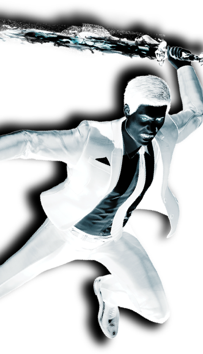
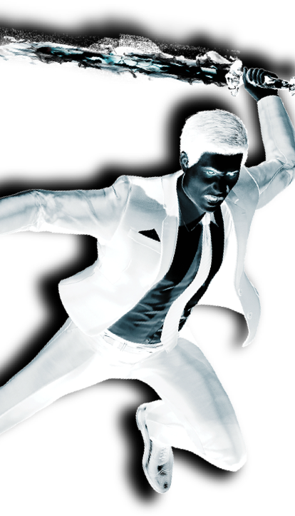
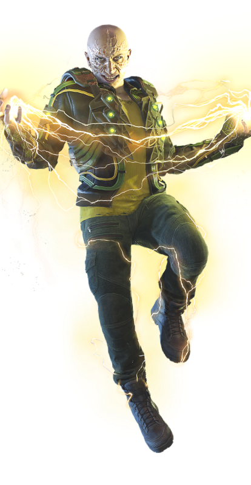
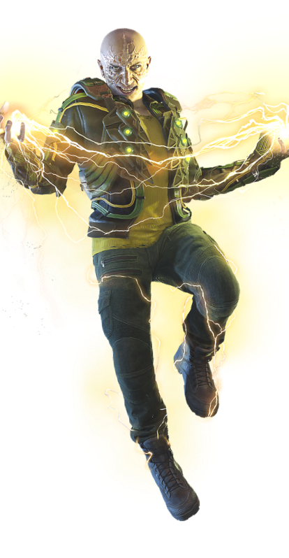
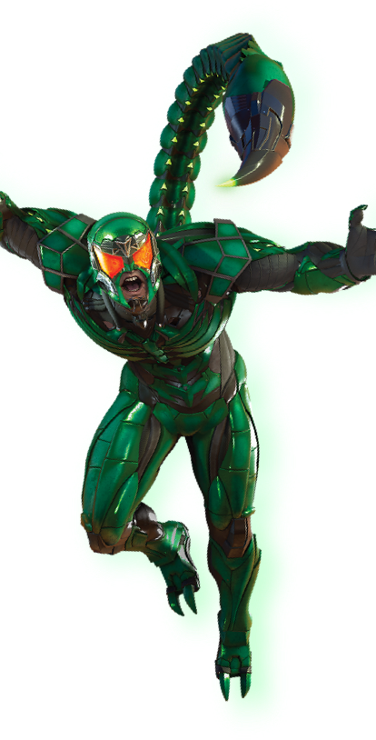
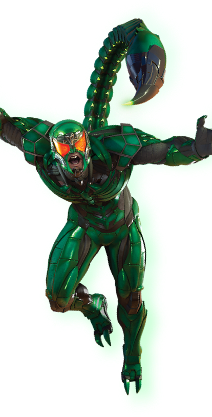

Mister Negative is a man divided. To the citizens of New York City he is Martin Li, respected businessman, philanthropist, and founder of the acclaimed F.E.A.S.T. shelters. But to the underworld he is known as Mister Negative, an upstart crime boss in command of the fearsome Inner Demons and wielder of a dark energy that he uses to destroy anything or anyone standing in his way. Obsessed with exacting revenge against a high-ranking New York City official whom he believes is responsible for his corruptive abilities, Mister Negative is a driving force behind a violent master plan that may rot the Big Apple to its core.

Wilson Fisk, who publicly acts as a philanthropist and legitimate businessman, secretly controls New York City’s organized crime families as the feared Kingpin. Spider-Man has spent years trying to incriminate him and finally does so – only to quickly learn that maybe Fisk was right when he said, “I’m the one who brought order to this city!” Spider-Man soon finds himself in the bizarre position of saving Fisk’s men to unravel a larger mystery of a new citywide menace.
 

With the ability to harness and wield electricity, Max Dillon has a larger mission in mind: to evolve his final form by transforming himself into pure, living energy. Enlisting the help of a sinister mastermind to help him in his twisted quest, Electro has agreed to help dismantle one of the most powerful men in New York City.
Granted superhuman strength by artificially crafted skin, Aleksei Sytsevich wants to shed the protective coverings and thuggish reputation as the Rhino, and he’s found a sinister someone who can help him do it. Of course, Rhino will need to pay this mastermind back once he’s been sprung from The Raft to wreak havoc on a powerful New York City magnate.
 

While he’s been safely behind bars at The Raft for the last few years, the maniacal Mac Gargan has been freed to renew his heated rivalry with Spider-Man. In exchange for the promise of a cleaned criminal record, the Scorpion is determined to strike down Spider-Man once and for all with his vicious venomous stinger.

Vulture has vexed Spider-Man with his lethal flight suit since Peter Parker first learned to channel his web-slinging abilities. Now Adrian Toomes suffers from spinal cancer due to the power produced from his winged rig. A particularly sinister villain has devised a plan to save Adrian’s life and free him from The Raft prison…in exchange for helping fix a vendetta against a city icon.

What’s the best way to rob a bank? Herman Schultz prefers to literally shock and awe, using a high-tech suit with gauntlets that blast intense vibrational waves to crush vaults and elude the police. Shocker has been a long-time Spider-Man nemesis, but something more sinister has motivated Schultz this time around..